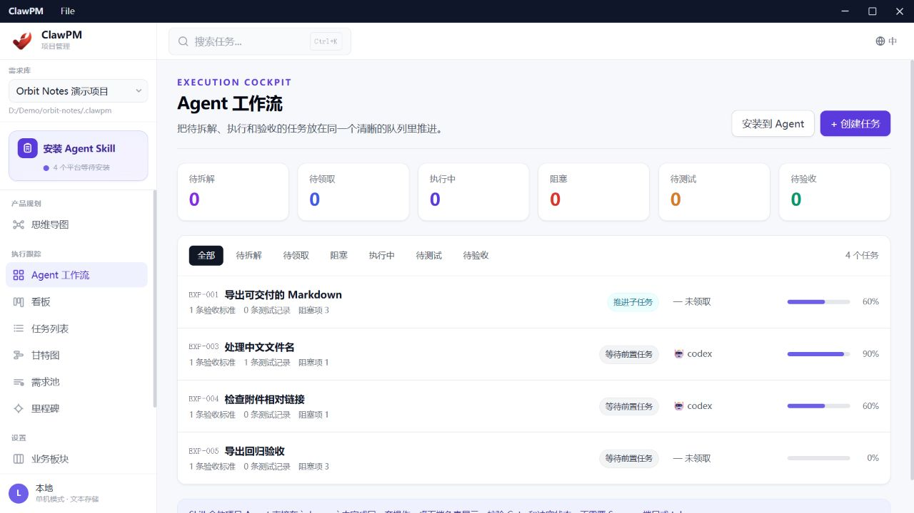
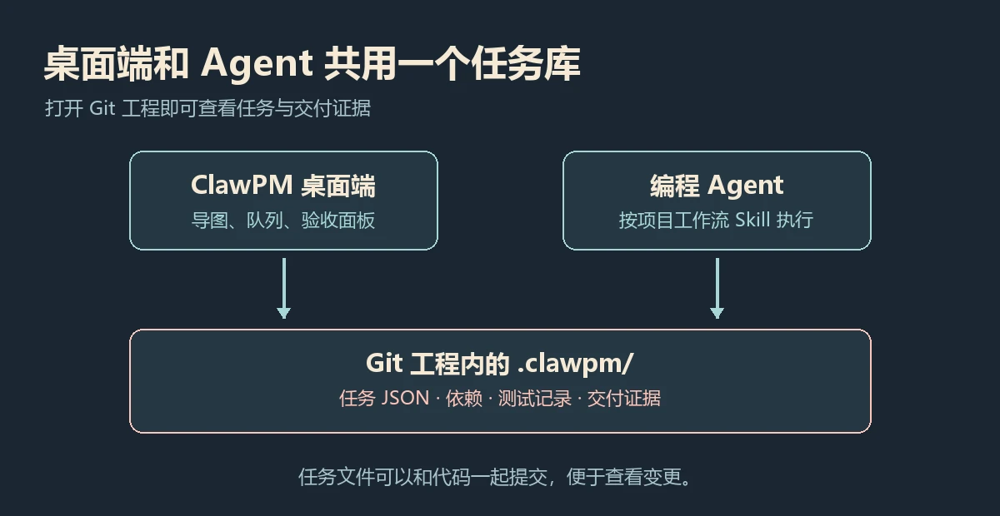
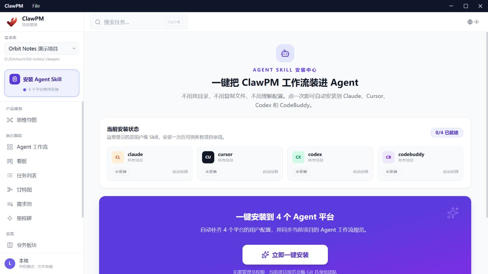

ClawPM
下一位接手的 Agent 怎么知道任务做到哪一步？ClawPM 用需求树拆目标，用工作流跟踪执行，把验收条件、测试结果和交付证据保存在 Git 工程里。
 放大查看 ↗
放大查看 ↗先把目标拆成能验收的任务
以 Markdown 导出为例，目标可以拆成保留标题层级、处理中文文件名、检查附件链接。每项有独立的通过条件，整条导出链路的回归测试要等三项都完成。
打开桌面端后，可以在思维导图里展开任务关系，也能用看板、任务列表和甘特图查看同一批任务。Agent 工作流按下一步分组，标明哪些等待依赖、哪些可以领取、哪些待测试。
 放大查看 ↗
放大查看 ↗
放大查看 ↗测试通过后，留下能复查的证据
领取任务时会记录当前执行者和租约期限。提交验收前，任务详情会检查验收标准、阻塞、依赖、子任务、测试验证和交付证据。需要测试的任务要留下通过记录，例如修改的代码路径和回归结果。
 放大查看 ↗
放大查看 ↗应用和 Agent 读写同一个任务库
桌面端负责浏览、编辑和校验，配套 Skill 指导编程 Agent 领取任务、更新进度并写回证据。两边读写当前 Git 工程的 .clawpm 目录，任务各自保存为 JSON 文件。把它们和代码一起提交，就能按提交追溯状态变化。

放大查看 ↗
放大查看 ↗